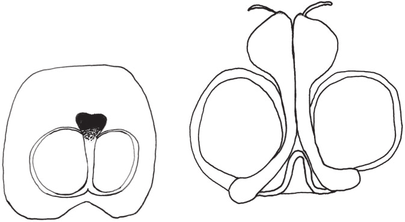
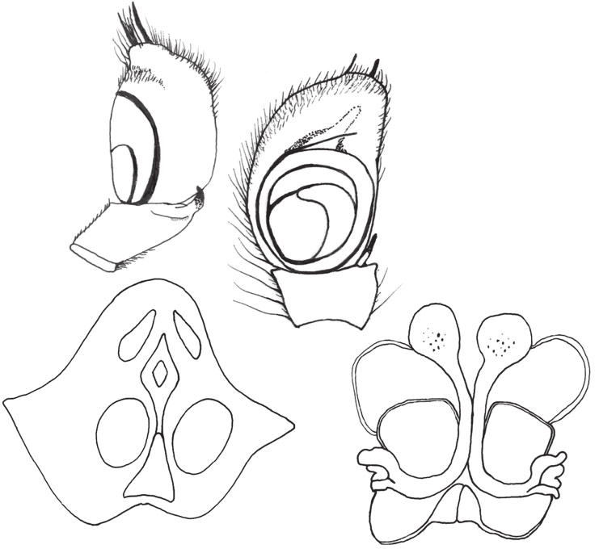
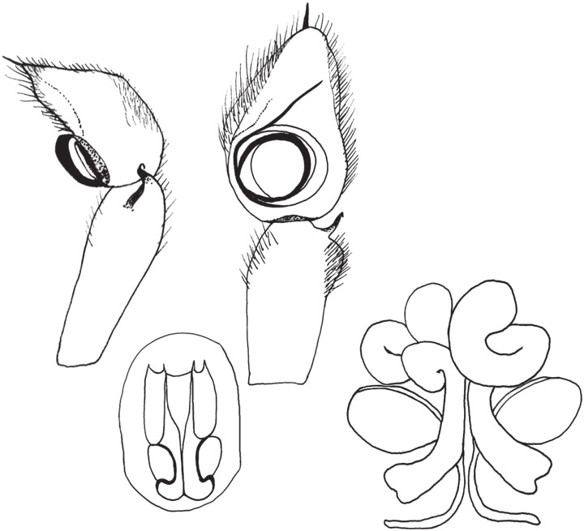

Abstract Based on taxonomic characters such as male and female genitalia and male chelicerae, four new species of Myrmarachne from Townsville, north Queensland are described. The proposed new species include: Myrmarachne rubra, Myrmarachne aurea, Myrmarachne gurgulla and Myrmarachne smaragdina. Information is also provided on the biology and ecology of these species and a comparison between the species is also presented, supported by data collected over 2.5?years.
Full text
Full text is available as a scanned copy of the original print version.
Get a printable copy (PDF file) of the
complete article, or click on a page image below to browse page by page.
Links are also available for
Selected References.
Images in this article

Figs 1–9. Myrmarachne rubra sp. nov., male (1, 2, 5–7): 1, 2, habitus, dorsal (1) and lateral (2) views; 5, 6, palpal tibia, cymbium and bulb, retrolateral (5), and ventral (6) views; 7, chelicera medio-lateral view; female (3, 4, 8, 9): 3, 4, habitus, dorsal (3) and lateral (4) views; 8, epigyne before maceration; 9, epigyne showing internal ducts. Scale lines: 1 mm for Figures 1–4; 100 mm for Figures 5, 6, 8, 9; 500 mm for Figure 7.

Figs 10–18. Myrmarachne aurea sp. nov., male (10, 11, 14–16): 10, 11, habitus, dorsal (10) and lateral (11) views; 14, 15, palpal tibia, cymbium and bulb, retrolateral (14), and ventral (15) views; 16, chelicera medio-lateral view; female (12, 13, 17, 18): 12, 13, habitus, dorsal (12) and lateral (13) views; 17, epigyne before maceration; 18, epigyne showing internal ducts. Scale lines: 1 mm for Figures 10–13; 100 mm for Figures 14, 15, 17, 18; 200 mm for Figure 16.

Figs 28–36. Myrmarachne smaragdina sp. nov., male (28, 29, 32–34): 28, 29, habitus, dorsal (28) and lateral (29) views; 32, 33, palpal tibia, cymbium and bulb, retrolateral (32), and ventral (33) views; 34, chelicera medio-lateral view; female (30, 31, 35, 36): 30, 31, habitus, dorsal (30) and lateral (31) views; 35, epigyne before maceration; 36, epigyne showing internal ducts. Scale lines: 1 mm for Figures 28–31, 34; 100 mm for Figures 32, 33, 35 and 36.